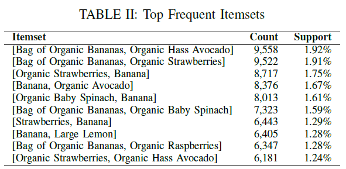
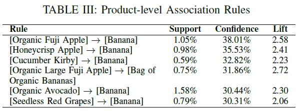

Association Rule Mining (Apriori Algorithm)
Association Rule Mining (Apriori Algorithm) is used to identify predictable and hidden relationships between items purchased together within a single Instacart transaction. The analysis is driven by three core metrics that are used to evaluate the strength and importance of each rule:
- Support: Measures how frequently an item combination appears in the entire dataset.
- Confidence: Indicates the reliability of the rule (e.g., the probability of buying item Y given that item X has already been purchased).
- Lift: Quantifies the strength of the association. A Lift value greater than 1.0 means the two items are more likely to be bought together than if they were independent, confirming a positive relationship.
Products Frequently Purchased Together
Table II shows the top frequent itemsets for products frequently purchased together with parameters set for minimum support of 0.5% and minimum confidence of 30%. A total of 76 frequent itemsets with a maximum length of 2 were identified. The most frequent associations occur within produce, especially fruits.
Table III shows the 6 association rules generated by the model displaying a strong confidence and lift. Bananas are a strong anchor product, appearing in all rules.
Frequent Aisle Combination
The top frequent itemsets at the aisle level are analyzed. Because the number of ailes is considerably lower, a greater support is expected, therefore the threshold have to be adjusted, the minimum support was set to 1% while the minimum confidence is kept at 30%. This resulted in 2,704 frequent itemsets with a maximum length of 6. In addition, 6,517 rules were generated. Table IV shows the top frequent itemsets generated.

Table V chart shows the results of the Apriori analysis and highlights the sparse nature of grocery purchases. The number of popular combinations drops very quickly as the length increases from 2 items to 3 items and beyond. This pattern confirms that while customers have core items they buy regularly, the specific combination of many different products in a single basket is rare. Therefore, the most valuable and statistically reliable product relationships for generating crossselling ideas are found in the shorter combinations, mainly those containing just two or three items.